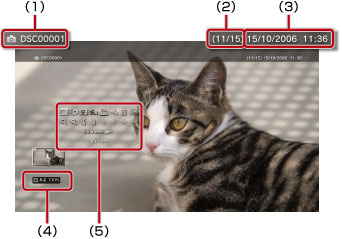

사진 > 제어판 사용하기
제어판 사용하기
화면상의 제어판에서 다양한 조작을 할 수 있습니다. 제어판은  버튼으로 표시/비표시를 전환할 수 있습니다.
버튼으로 표시/비표시를 전환할 수 있습니다.
표시 모드

화면에 표시되는 이미지의 크기를 변경합니다.
| 표준 | 이미지의 비율을 변경하지 않고 화면 크기에 맞게 표시합니다. |
|---|---|
| 줌 | 이미지의 비율을 변경하지 않고 상하 또는 좌우의 일부를 잘라서 화면에 가득히 표시합니다. |
알아두기
이미지 파일에 따라서는 표시 모드가 전환되지 않는 경우가 있습니다.
전환 효과
이미지 전환 방법을 변경합니다.
| 표준 | 이전 이미지가 사라지는 것과 동시에 다음 이미지로 전환됩니다. |
|---|---|
| 슬라이드 | 다음 이미지가 왼쪽에서부터 이전 이미지를 덮으며 슬라이드되어 들어옵니다. |
| 페이드 | 페이드 효과를 사용해 다음 이미지로 전환됩니다. |
트리밍
이미지 상하좌우의 불필요한 부분을 삭제합니다. 무선 컨트롤러의 왼쪽 스틱/오른쪽 스틱을 사용하여 남겨 놓을 영역을 선택합니다. 왼쪽 스틱으로 임의의 방향으로 스크롤하고, 오른쪽 스틱으로 확대/축소를 할 수 있습니다. 트리밍된 이미지는 다른 파일명으로 저장됩니다.
알아두기
PS3™의 본체 스토리지에 저장된 이미지만 트리밍할 수 있습니다.
재생 목록에 추가
이미지를 재생 목록에 추가합니다.
알아두기
재생 목록에 추가할 수 있는 것은 본체 스토리지에 저장된 이미지로 한정됩니다.
인쇄
이미지를 인쇄합니다.
알아두기
인쇄하려면 프린터를 설정해야 합니다.  (설정) >
(설정) >  (프린터 설정) > [프린터 선택]에서 설정해 주십시오.
(프린터 설정) > [프린터 선택]에서 설정해 주십시오.
바탕화면으로 설정
화면에 표시된 이미지를 바탕화면으로 설정합니다. 이미지를 확대/축소, 회전한 상태에서는 화면에 표시된 대로 설정됩니다.
알아두기
- 바탕화면을 사용하지 않을 경우 (설정) >
 (테마 설정) > [배경]에서 설정을 변경해 주십시오
(테마 설정) > [배경]에서 설정을 변경해 주십시오 - 이미지를 하나만 바탕화면으로 설정할 수 있습니다. 다른 이미지를 설정하면 현재 이미지는 덮어쓰기 됩니다.
삭제
이미지를 삭제합니다.
알아두기
삭제할 수 있는 것은 본체 스토리지에 저장된 이미지로 한정됩니다.
화면 표시
이미지 정보를 표시합니다. 버튼을 누를 때마다 Exif 정보를 표시한 화면, 정보 바를 표시한 화면, 표시하지 않는 화면이 전환됩니다.
버튼을 누를 때마다 Exif 정보를 표시한 화면, 정보 바를 표시한 화면, 표시하지 않는 화면이 전환됩니다.
정보 바를 표시한 화면

(1) |
이미지명 |
|---|---|
(2) |
이미지 번호/총 이미지 수 |
(3) |
기록된 날짜/시각 |
(4) |
상태 아이콘 |
(5) |
제어판 |
확대/축소

이미지를 확대/축소하여 표시합니다. 무선 컨트롤러의 왼쪽 스틱으로 임의의 방향으로 스크롤하고, 오른쪽 스틱으로 확대/축소할 수 있습니다.
회전 (좌)/회전 (우)
이미지를 왼쪽이나 오른쪽으로 90도 회전합니다.
위/아래/왼쪽/오른쪽
(표시 모드)가 [줌]으로 설정된 경우 이미지를 움직여 가려진 부분을 표시합니다.
이전/다음
이전 또는 다음 이미지를 표시합니다.
슬라이드 쇼
자동으로 이미지를 한 장씩 표시합니다.